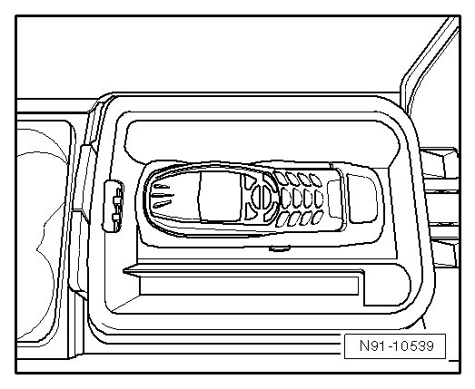

Telephone System/Telephone Preparation with Telephone Cradle in Center Console
Telephone System/Telephone Preparation with Telephone Cradle in Center Console
This version concerns a "universal cell phone preparation". That means a telephone base cradle is installed in the center armrest. A suitable telephone cradle appropriate to the cell phone used can be placed on the base cradle.

• This telephone system is also available in a version with Bluetooth technology. The vehicle is already prepared for this, but the Bluetooth technology is not used at this time.